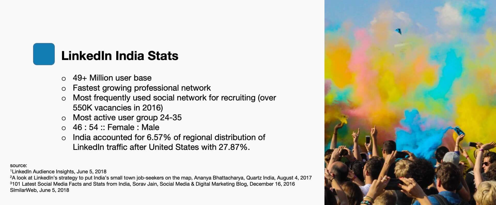
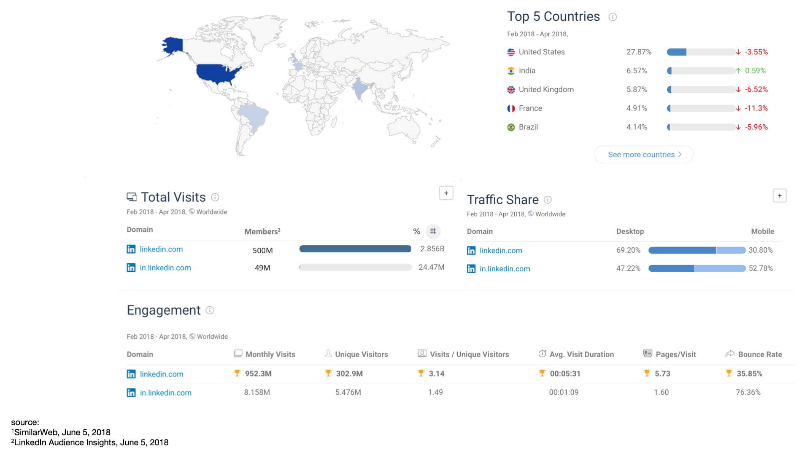
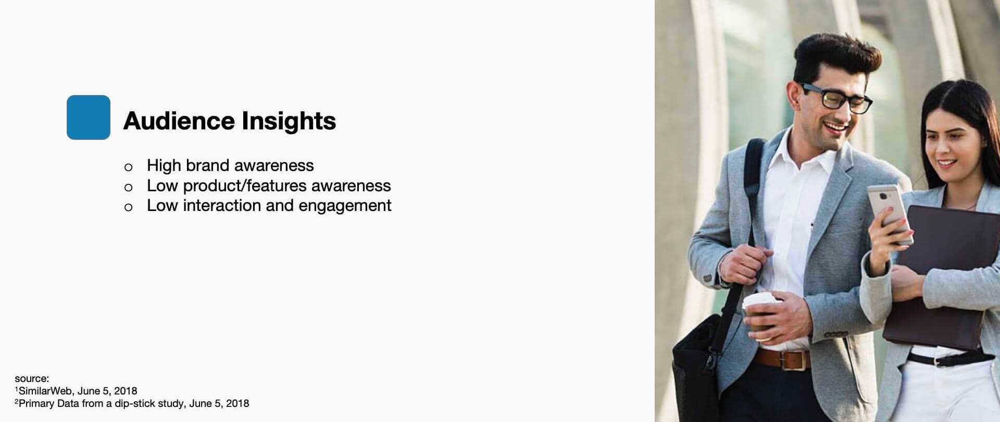
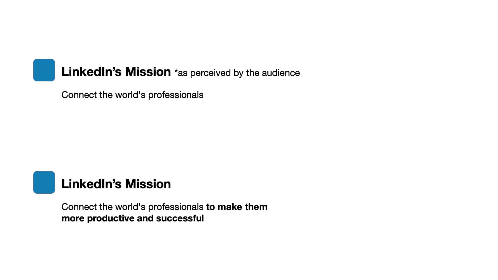
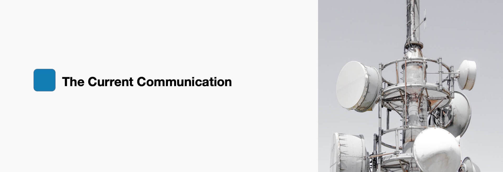
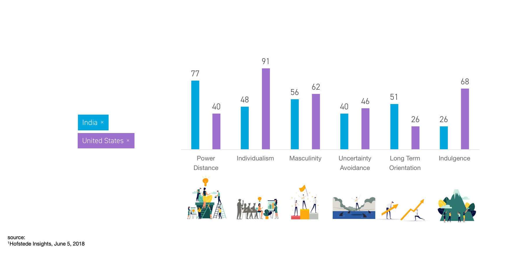
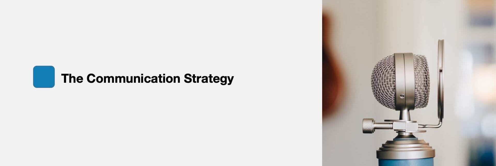
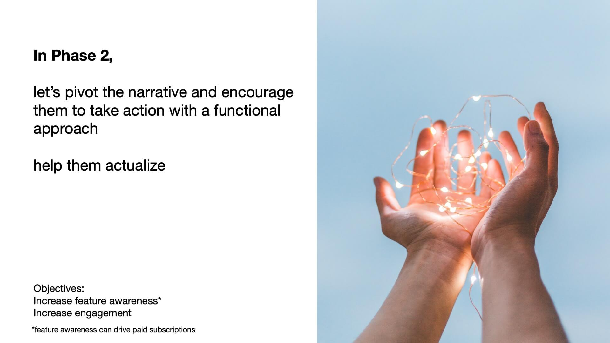
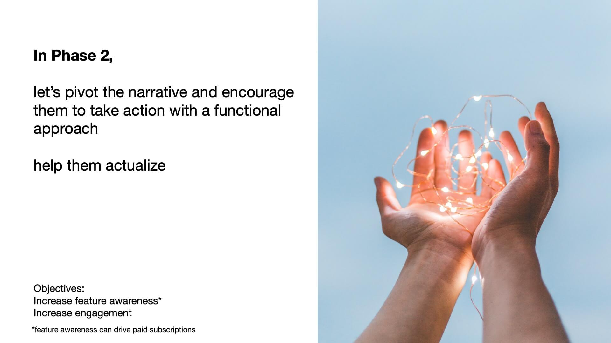

Brand Strategy / Communication Design / Campaign Design /
The Glitch | LinkedIn
LinkedIn in India is typically seen as a brand that's not too welcoming and feels like a place where only senior management and above can actually connect and converse. LinkedIn wanted us to help them make it seem more open as a platform and as one that supports any profession.
 When we studied its user activity we understood that LinkedIn India’s traffic and usage stats are way below its global average. The growth rates have been phenomenal with some sources claiming “1 new member every 2 seconds” but when it comes to repeat visit, usage and interaction patterns the performance is weak. For example: With a 49 Million user base, barely 1.82 Million are visiting per month, a 3.7% monthly active audience, who also exhibit low engagement metric reflected by 1.09 minute session times, very low pages views per session and a high bounce rates.
We conducted a primary study to understand the usage patterns and most people said they spent time on LinkedIn only when they were looking out for jobs. Of the exhaustive list of features LinkedIn has, the top of mind recall for features was limited to LinkedIn Jobs, Messaging and InMail. People did not know what the platform had to offer, rest aside what they could accomplish with these features.
 The campaign at the time: ‘We are in it together’ was based on the insight that members feel a sense of fulfilment when their personal and professional values align to form their own personal definition of success. The campaign was created in the US and then taken global with India being the second country for roll-out. The idea was to foster an even stronger sense of community amongst professionals, whether they are just starting out and finding their way in their careers or are already established in their own right. The people featured also reflected a glimpse of diversity and inclusion of contemporary careers.
But palpable difference between the workforce’s culture in the United States and that of India, made us dig deeper into the feasibility of this unified approach.
Hofstede Insights’ Country Comparison Tool is a metric that aims to provide practical means of understanding the impact Culture has on work and life across different countries. We start off with a contrast between, the United States and India. It is a metricized version of our otherwise beliefs and opinions.
To demonstrate the difference, India’s work culture is that of restraint. We believe is controlling our desires and impulses, in submitting to authority. We believe in avoiding uncertainty, that can build a sense of complacency, a very “Chalta hai“ attitude. We revere power and hierarchy, formal, reserves, cautious and non-expressive work culture. And we are collectivists, we choose good of the group over our own. We conform to opinions, beliefs and validations. All of the aforementioned are drastically different traits from American culture. On the rewards Individualism and unbridled Ambition. While collective good, higher purpose and sense of belonging has now come to inspire them, a departure from their individualistic roots, it’s hardly nouvelle for India. India needs quite the contrary, an encouragement to stand out.
 

We needed to nudge people to stray away from established notions and make a change for their self-fullfilment
And we decided to do this while highlighting stories of people whose one move changed their lives. Moves that have a parallel with out products and features. For example: InMail as a modern version of an elevator pitch. This way, we could maintain the attitudinal approach of stories while introducing our features and also helping people get closer to their goals.